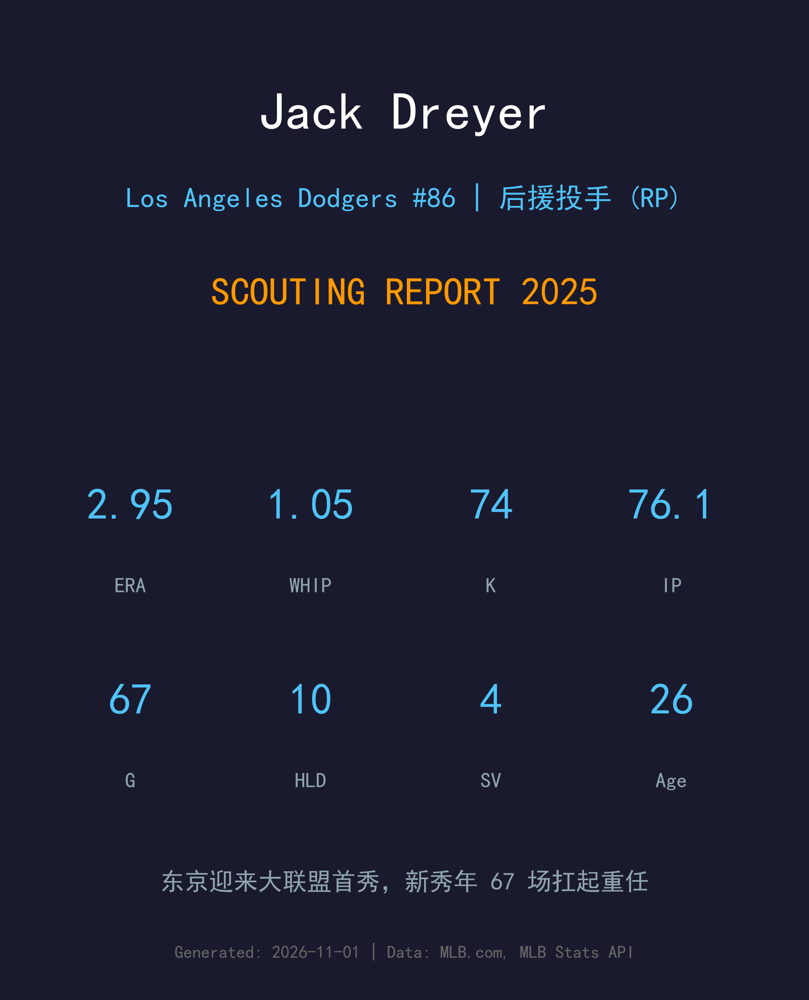
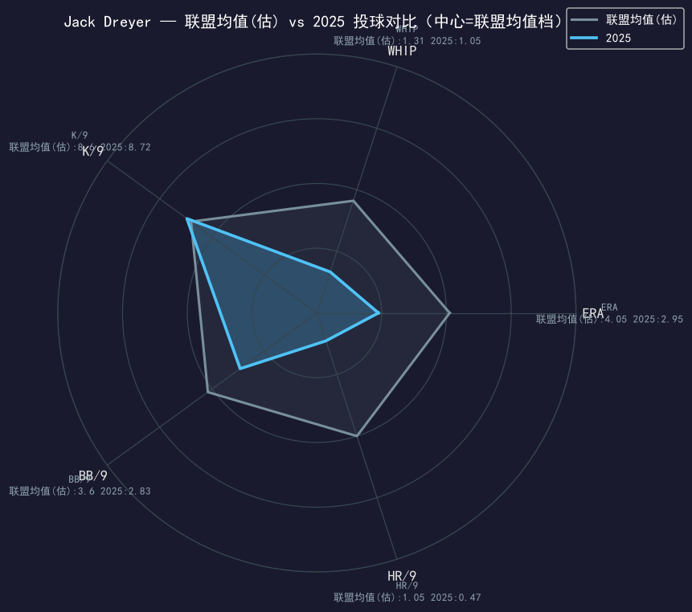
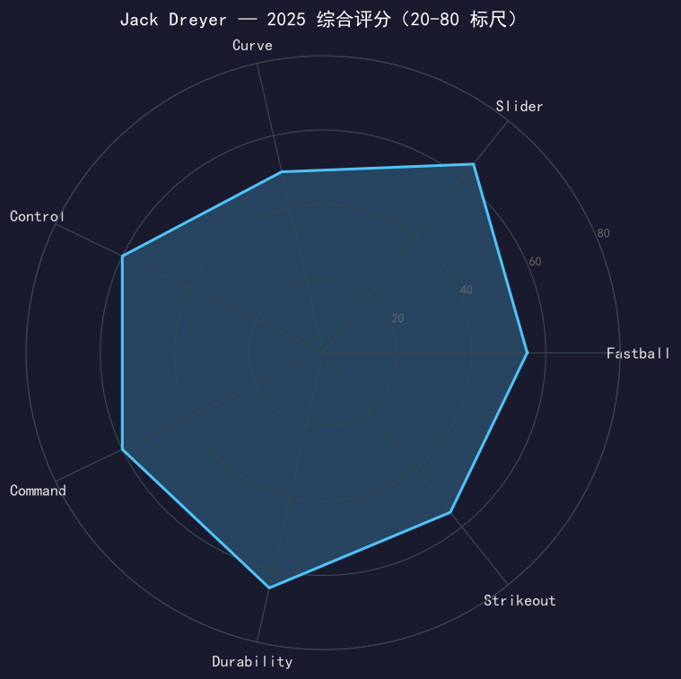

Los Angeles Dodgers #86 | 后援投手 | 左投 | 东京迎来大联盟首秀，新秀年 67 场扛起重任

Jack Dreyer 的 2025 年故事有一个梦幻开场：大联盟首秀发生在东京巨蛋——2025 赛季开幕战的舞台——而这只是他菜鸟季 67 场出赛的第一页。这个数字领先全队牛棚，也让所有人才评估报告上「尚需观察」的标签被他亲手撕掉。
成绩单：67 场出赛（5 场先发）、3 胜 2 负、4 次救援成功、10 次中继成功、2.95 自责分率、1.05 WHIP。左投身份加上滑球主导的武器库，让他成为道奇牛棚中对付左打者的首选；而 15.01 的每局用球数与 .660 的好球率，则是教练组敢在局面胶着时把他派上场的底气。
0.47 的 HR/9 全队最低档、56 支被安打分布在 76.1 局中（被打击率仅 .206），这份新秀答卷的含金量远超「惊喜」二字——他是道奇 2025 年最成功的内部挖掘。
在 MLB 东京开幕战的全球直播舞台上登板——不是所有新秀的大联盟第一天都有五万人现场见证。
67 场出赛全队牛棚第一，涵盖布局、终结、长中继与 5 场紧急先发——教练组用真金白银的信任票投给了他。
随队完成外卡到世界大赛的全程，并在季后赛 8 场出赛自责分率为 0——新秀的第一次十月之旅交出了满分防守。

| 指标 | ERA | WHIP | K/9 | BB/9 | HR/9 |
|---|---|---|---|---|---|
| 联盟后援均值（估） | 4.05 | 1.31 | 8.6 | 3.6 | 1.05 |
| Dreyer 2025 | 2.95 | 1.05 | 8.72 | 2.83 | 0.47 |
五项核心指标全面优于联盟均值：ERA 低 1.10、WHIP 低 0.26、保送少 0.8、全垒打不到均值一半。唯一与均值持平的是三振率——他不是三振型后援，而是「让打者打不好」的类型，这与他的滑球主导的配球逻辑完全一致。
2025 赛季真实配球数据（MLB Stats API pitchArsenal）：
接近一半的配球占比！88 mph 的硬滑球是他对抗所有打者的主力武器，横向位移锐利，两好球后的终结率极高。
左投手的四缝线自带「隐形加 mph」属性，内角压制右打者、外角抢好球数，与滑球形成完美的速度-位移组合拳。
慢速曲球作为配球点缀，用来改变打者的击球视线高度，占比不高但关键时刻常有奇效。
Dreyer 不是那种「天赋爆表但毛躁」的新秀。他的成功建立在极端的控球纪律上：BB/9 2.83、好球率 .660、每局仅 15 个用球——这些都是老将级别的数据。教练组敢让一个菜鸟在东京开幕战登板、敢在九月卡位战让他终结比赛，看中的正是这份与年龄不符的稳定性。
46.2% 的滑球占比在 MLB 极为罕见——这不是无奈之举，而是清醒的自我认知：他的滑球就是他最好的球，每一颗都值得一投。硬滑球 + 四缝线的二选一游戏看似简单，但 88 mph 的滑球均速意味着打者几乎没有「读慢球」的时间窗口。被打击率 .206 与 HR/9 0.47 是这套哲学的直接回报。
5 场紧急先发是教练组给他的附加题，答卷中规中矩——他证明了「被逼到那份上也能先发」，但也暴露了武器库偏二球种、第三轮打击顺序后压制力下滑的问题。短期内他的最佳定位仍是牛棚，尤其是面对左打者扎堆的局。

成熟即战力的新秀左臂
B 级 / 布局投手
道奇 2025 季后赛夺冠之路：外卡 2-0 红人 → NLDS 3-1 费城人 → NLCS 4-0 酿酒人 → 世界大赛 4-3 多伦多蓝鸟。
| G | IP | ERA | WHIP | SO | BB | H |
|---|---|---|---|---|---|---|
| 8 | 4.0 | 0.00 | 1.50 | 4 | 3 | 3 |
Jack Dreyer 的 2026 年展望清晰而令人期待：从「什么都能顶的救火队员」进化为「第七八局的固定答案」。他需要补的课也很明确：第三球种的可靠性（曲球或新学变速球）、以及面对右打者时的压制方案。考虑到左投的身份与 already-proven 的耐久度，他的地板很高，天花板取决于武器库的丰富程度。
理想剧本：竞争 setup 主力，单季 70+ 场、ERA 维持 3 以下
现实基准：继续全能角色，重点对付左打者的布局局
上行惊喜：若变速球成型，不排除重返先发的可能
Jack Dreyer 出生于犹他州盐湖城，一个不以棒球闻名的地方。他走上投手丘的道路与大多数大联盟球员不同——没有天才光环，没有首轮选秀的聚光灯，有的只是一年复一年的自我打磨。
2025 年 3 月 19 日，MLB 东京开幕战，道奇与小熊在东京巨蛋拉开新赛季大幕。当教练组宣布登板名单时，「Jack Dreyer」这个名字让大多数球迷愣了一下——然后他冷静地投完了自己的大联盟初体验。从那一刻起，他再也没有离开过牛棚的轮换表。
67 场出赛后，新秀 fatigue 是真实存在的，但 Dreyer 用季后赛 8 场零失分回应了所有怀疑。在道奇星光熠熠的阵容里，他是最不起眼的那个，也可能是成长曲线最陡的那个。